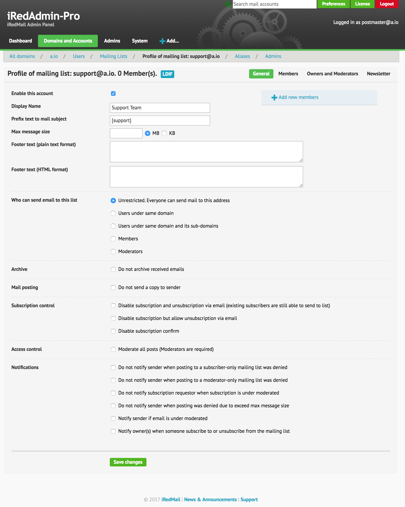

In iRedMail-0.9.8, we integrate mlmmj (http://mlmmj.org) - a simple and slim mailing list manager. It uses very few resources, and requires no daemons, easy to install, configure and manage. if offers a great set of features, including:
With mlmmj integration, you can create as many mailing lists as you want. End
user can subscribe to mailing list listname@domain.dom by sending email to
listname+subscribe@domain.com, unsubscribe from the list by sending email to
listname+unsubscribe@domain.com. Of course you can disable the subscription
and unsubscription with a setting.
iRedMail team also developes a simple RESTful API server called mlmmjadmin
to help manage mailing lists, it also offers script tool to manage mailing
lists from command line.
We will show you how to integrate both mlmmj and mlmmjadmin in this tutorial.
Although we don't modify any existing SQL data in this tutorial, but it's a good idea to backup it now before you adding any new mailing lists.
Please run command bash /var/vmail/backup/backup_mysql.sh to backup SQL
databases.
mlmmj will be ran as user mlmmj and group mlmmj, all mailing list data will
be stored under its home directory /var/vmail/mlmmj:
On Linux or OpenBSD:
groupadd mlmmj
useradd -m -d /var/vmail/mlmmj -s /sbin/nologin mlmmj
chown -R mlmmj:mlmmj /var/vmail/mlmmj
chmod -R 0700 /var/vmail/mlmmj
On FreeBSD:
pw groupadd mlmmj
pw useradd -m -g mlmmj -s /sbin/nologin -d /var/vmail/mlmmj mlmmj
chown -R mlmmj:mlmmj /var/vmail/mlmmj
chmod -R 0700 /var/vmail/mlmmj
vmail databaseWe need some updates in vmail SQL database:
maillists: used to store profile of mailing list.forwardings.is_maillistdomain.maillists: used to set per-domain limit of mailing
list accounts. This column is mostly used by iRedAdmin-Pro.Now apply the SQL changes with SQL commands below:
cd /tmp
wget https://bitbucket.org/zhb/iredmail/raw/default/extra/update/0.9.8/mlmmj.mysql
mysql vmail < mlmmj.mysql
Please add lines below in Postfix config file /etc/postfix/master.cf:
Attention
/usr/bin/mlmmj-amime-receive doesn't exist yet, we will
create it later./usr/local/usr/bin/mlmmj-amime-receive instead.# ${nexthop} is '%d/%u' in transport ('mlmmj:%d/%u')
mlmmj unix - n n - - pipe
flags=ORhu user=mlmmj argv=/usr/bin/mlmmj-amime-receive -L /var/vmail/mlmmj/${nexthop}
/etc/postfix/main.cf:mlmmj_destination_recipient_limit = 1
/etc/postfix/main.cf, update existing parameter
transport_maps, add new sql lookup like below. We will create required sql
lookup file later.transport_maps =
proxy:mysql:/etc/postfix/mysql/transport_maps_user.cf
proxy:mysql:/etc/postfix/mysql/transport_maps_maillist.cf # <- Add this line
...
/etc/postfix/mysql/mlmmj_maillists_maps.cf:Warning
Please update the password = line with the real password of SQL user
vmail, you can find it in files under /etc/postfix/mysql/.
user = vmail
password = qsescZvV03f6YUtTMN2bQTejmjatzz
hosts = 127.0.0.1
port = 3306
dbname = vmail
query = SELECT maillists.transport FROM maillists,domain WHERE maillists.address='%s' AND maillists.active=1 AND maillists.domain = domain.domain AND domain.active=1
/usr/bin/mlmmj-amime-receive (Linux) or
/usr/local/bin/mlmmj-amime-receive (Linux/FreeBSD):Attention
mlmmj doesn't support signature signing very well, so we follow mlmmj
official document and create this script to sign signature properly with
command altermime. All iRedMail installation should have command
altermime (package AlterMIME) available, so you don't need to install
it manually
On Linux:
cd /usr/bin/
wget https://bitbucket.org/zhb/iredmail/raw/default/iRedMail/samples/mlmmj/mlmmj-amime-receive
chown mlmmj:mlmmj mlmj-amime-receive
chmod 0550 mlmmj-amime-receive
perl -pi -e 's#PH_CMD_MLMMJ_RECEIVE#/usr/bin/mlmmj-receive#g' mlmmj-amime-receive
perl -pi -e 's#PH_CMD_ALTERMIME#/usr/bin/altermime#g' mlmmj-amime-receive
On FreeBSD or OpenBSD:
cd /usr/local/bin/
wget https://bitbucket.org/zhb/iredmail/raw/default/iRedMail/samples/mlmmj/mlmmj-amime-receive
chown mlmmj:mlmmj mlmj-amime-receive
chmod 0550 mlmmj-amime-receive
perl -pi -e 's#PH_CMD_MLMMJ_RECEIVE#/usr/local/bin/mlmmj-receive#g' mlmmj-amime-receive
perl -pi -e 's#PH_CMD_ALTERMIME#/usr/local/bin/altermime#g' mlmmj-amime-receive
We need Amavisd to listen on one more port 10027, it will be used to scan
spam/virus for emails posted to mailing list.
$inet_socket_port, add new
port number 10027 in the list, like below:/etc/amavisd/amavisd.conf./etc/amavis/conf.d/50-user./etc/amavisd.conf./usr/local/etc/amavisd.conf.$inet_socket_port = [10024, 10026, 10027, 9998];
MLMMJ for emails submitted by mlmmj from port 10027. The purpose is signing
DKIM key on outgoing emails sent by mailing list, but disable
spam/virus/banned/bad-header checks, because emails sent to mailing list will
be scanned either on port 10024 (incoming email from external senders) or
10026 (outgoing email sent by smtp authenticated users).$interface_policy{'10027'} = 'MLMMJ';
$policy_bank{'MLMMJ'} = {
originating => 1, # declare that mail was submitted by our smtp client
allow_disclaimers => 0, # mailing list should use footer text instead.
enable_dkim_signing => 1, # sign DKIm signature
smtpd_discard_ehlo_keywords => ['8BITMIME'],
terminate_dsn_on_notify_success => 0, # don't remove NOTIFY=SUCCESS option
bypass_spam_checks_maps => [1], # don't check spam
bypass_virus_checks_maps => [1], # don't check virus
bypass_banned_checks_maps => [1], # don't check banned file names and types
bypass_header_checks_maps => [1], # don't check bad header
};
Now restart Amavisd and Postfix servivce, mlmmj mailing list manager is now fully integrated.
We will setup mlmmjadmin program to make managing mailing lists easier.
Download the latest mlmmjadmin release: https://github.com/iredmail/mlmmjadmin/releases,
and upload to iRedMail server. We assume it's uploaded to /root/ directory.
Attention
We use mlmmjadmin-1.0 for example below.
Extract downloaded mlmmjadmin package to /opt/ directory, and create a
symbol link:
tar xjf /root/mlmmjadmin-1.0.tar.bz2 -C /opt
ln -s /opt/mlmmjadmin-1.0 /opt/mlmmjadmin
settings.py.sample:cd /opt/mlmmjadmin
cp settings.py.sample settings.py
chown mlmmj:mlmmj settings.py
chmod 0400 settings.py
$ echo $RANDOM | md5sum
43a89b7aa34354089e629ed9f9be0b3b
/opt/mlmmjadmin/settings.py, parameter api_auth_tokens
like below:api_auth_tokens = ['43a89b7aa34354089e629ed9f9be0b3b']
You can add as many token as you want for different API clients. For example:
api_auth_tokens = ['43a89b7aa34354089e629ed9f9be0b3b', '703ed37b20243d7c51c56ce6cd90e94c']
backend_api and backend_cli in /opt/mlmmjadmin/settings.py
like below:backend_api = 'bk_none'
backend_cli = 'bk_iredmail_sql'
backend_api and backend_cli in /opt/mlmmjadmin/settings.py
like below:backend_api = 'bk_iredmail_sql'
backend_cli = 'bk_iredmail_sql'
Add extra required parameters in /opt/mlmmjadmin/settings.py, so that
mlmmjadmin can connect to SQL server and manage mailing lists.
Attention
You can find SQL server address, port, database name, SQL username and
password in iRedAdmin config file, the SQL user must have both read and
write privileges to manage vmail database. iRedMail server usually
use SQL user vmailadmin for this purpose.
iredmail_sql_db_type = 'mysql'
iredmail_sql_db_server = '127.0.0.1'
iredmail_sql_db_port = 3306
iredmail_sql_db_name = 'vmail'
iredmail_sql_db_user = 'vmailadmin'
iredmail_sql_db_password = '<password>'
#
# For RHEL/CentOS
#
cp /opt/mlmmjadmin/rc_scripts/systemd/rhel.service /lib/systemd/system/mlmmjadmin.service
chmod 0644 /lib/systemd/system/mlmmjadmin.service
systemctl daemon-reload
systemctl enable mlmmjadmin
#
# For Debian 9 and Ubuntu 16.04 which uses systemd
#
cp /opt/mlmmjadmin/rc_scripts/systemd/debian.service /lib/systemd/system/mlmmjadmin.service
chmod 0644 /lib/systemd/system/mlmmjadmin.service
systemctl daemon-reload
systemctl enable mlmmjadmin
#
# For FreeBSD
#
cp /opt/mlmmjadmin/rc_scripts/mlmmjadmin.freebsd /usr/local/etc/rc.d/mlmmjadmin
chmod 0755 /usr/local/etc/rc.d/mlmmjadmin
echo 'mlmmjadmin_enable=YES' >> /etc/rc.conf.local
#
# For OpenBSD
#
cp /opt/mlmmjadmin/rc_scripts/mlmmjadmin.openbsd /etc/rc.d/mlmmjadmin
chmod 0755 /etc/rc.d/mlmmjadmin
rcctl enable mlmmjadmin
#
# For RHEL/CentOS
#
mkdir /var/log/mlmmjadmin
chown root:root /var/log/mlmmjadmin
chmod 0755 /var/log/mlmmjadmin
#
# For Debian/Ubuntu
#
mkdir /var/log/mlmmjadmin
chown syslog:adm /var/log/mlmmjadmin
chmod 0755 /var/log/mlmmjadmin
#
# For OpenBSD/FreeBSD
#
mkdir /var/log/mlmmjadmin
chown root:wheel /var/log/mlmmjadmin
chmod 0755 /var/log/mlmmjadmin
For Linux
cp /opt/mlmmjadmin/samples/rsyslog/mlmmjadmin.conf /etc/rsyslog.d/
service rsyslog restart
For OpenBSD, please append below lines in /etc/syslog.conf:
!!mlmmjadmin
local5.* /var/log/mlmmjadmin/mlmmjadmin.log
For FreeBSD, please append below lines in /etc/syslog.conf:
!mlmmjadmin
local5.* /var/log/mlmmjadmin/mlmmjadmin.log
mlmmjadmin service:#
# On Linux/FreeBSD:
#
service mlmmjadmin restart
#
# On OpenBSD
#
rcctl start mlmmjadmin
With iRedAdmin-Pro, you can easily manage mailing list accounts with its web UI. Here's a screenshot of mailing list profile page in iRedAdmin-Pro:

mlmmjadmin ships script tools/maillist_admin.py to help you manage mailing
lists. You can find this script under directory /opt/mlmmjadmin/tools/.
Attention
All settings used to create or update mailing list profiles are listed on mlmmjadmin document.
python maillist_admin.py create list@domain.com only_subscriber_can_post=yes disable_archive=no
python maillist_admin.py info list@domain.com
python maillist_admin.py update list@domain.com only_moderator_can_post=yes disable_subscription=yes
python maillist_admin.py delete list@domain.com archive=yes
python maillist_admin.py subscribers list@domain.com
python maillist_admin.py subscribed subscriber@domain.com
python maillist_admin.py has_subscriber list@domain.com subscriber@gmail.com